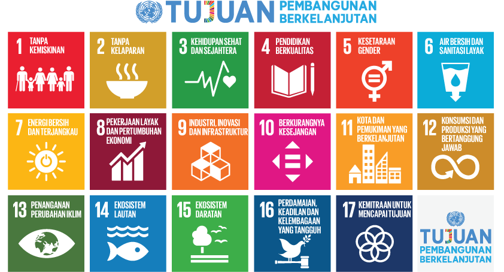

Selamat datang di website pertama saya, Kayla Theresia - 94/20. Pada web ini saya akan membahas mengenai kerja sama yang terjadi di dunia kita ini. Kita adalah manusia, yang juga merupakan makhluk sosial, oleh karena itu jumlah terjadinya kerja sama pasti sangat banyak bahkan tak terhingga. Kita bisa saja sedang melakukan kerja sama dan tidak menyadarinya. Tujuan utama dilakukannya kerja sama, karena kita adalah makhluk sosial dengan kekurangan masing - masing sehingga membutuhkan bantuan sesama untuk melengkapinya. Sama dengan negara kita. Negara - negara di dunia memiliki kelebihan dan kekurangannya masing - masing, baik dalam sumber daya alam, teknologi, ilmu pengetahuan, dan masih banyak lagi. Demi memenuhi kebutuhan negaranya masing - masing, maka terjadilah kerja sama antarnegara yang pada akhirnya membentuk organisasi - organisasi pada bidangnya masing - masing. Kali ini saya akan membahas kerja sama antar negara tersebut, terutama dalam lingkup Indonesia. Saya juga akan membahas Tujuan Pembangungan Berkelanjutan atau Sustainable Development Goals yang sedang berlangsung dari tahun 2015 hinga 2030. Tanpa berlama - lama lagi, ayo kita jelajahi bersama.